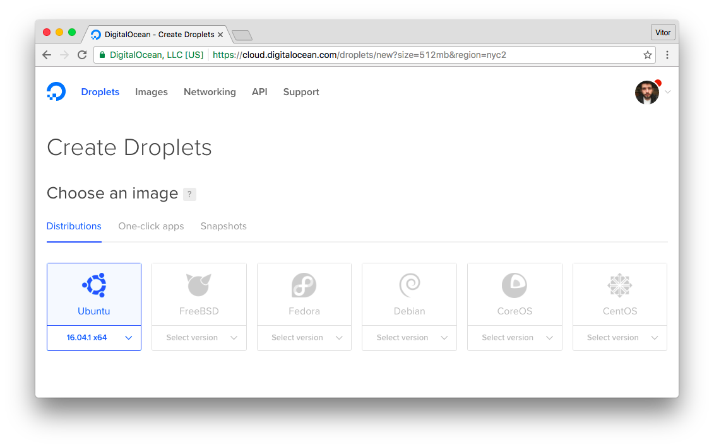
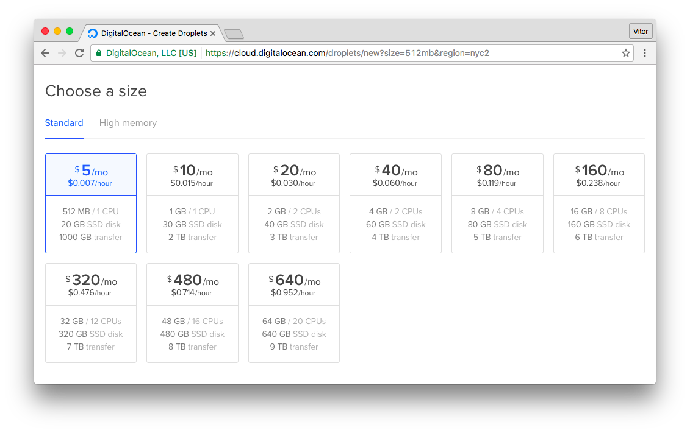
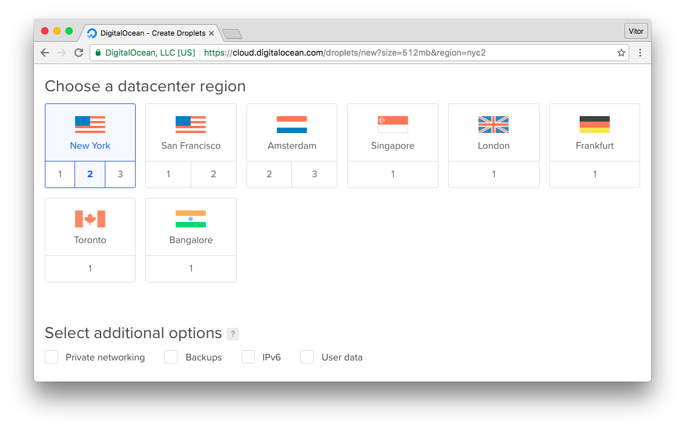
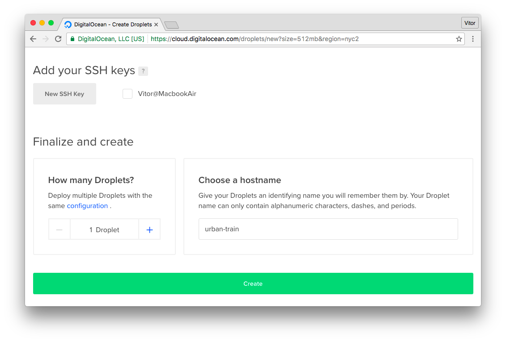
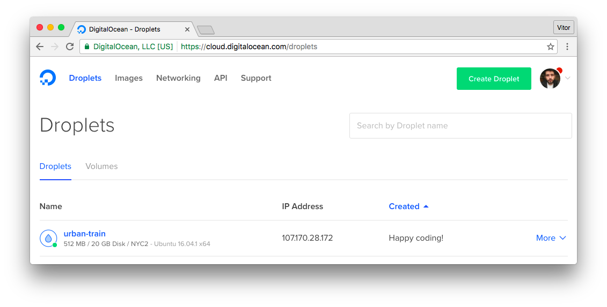
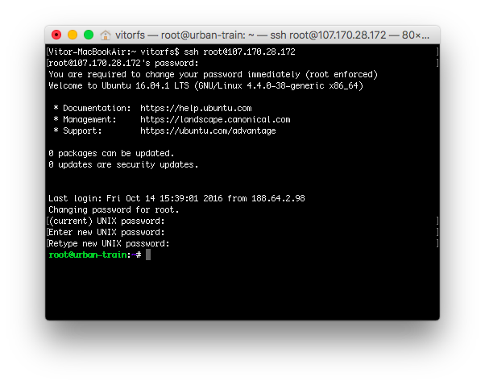
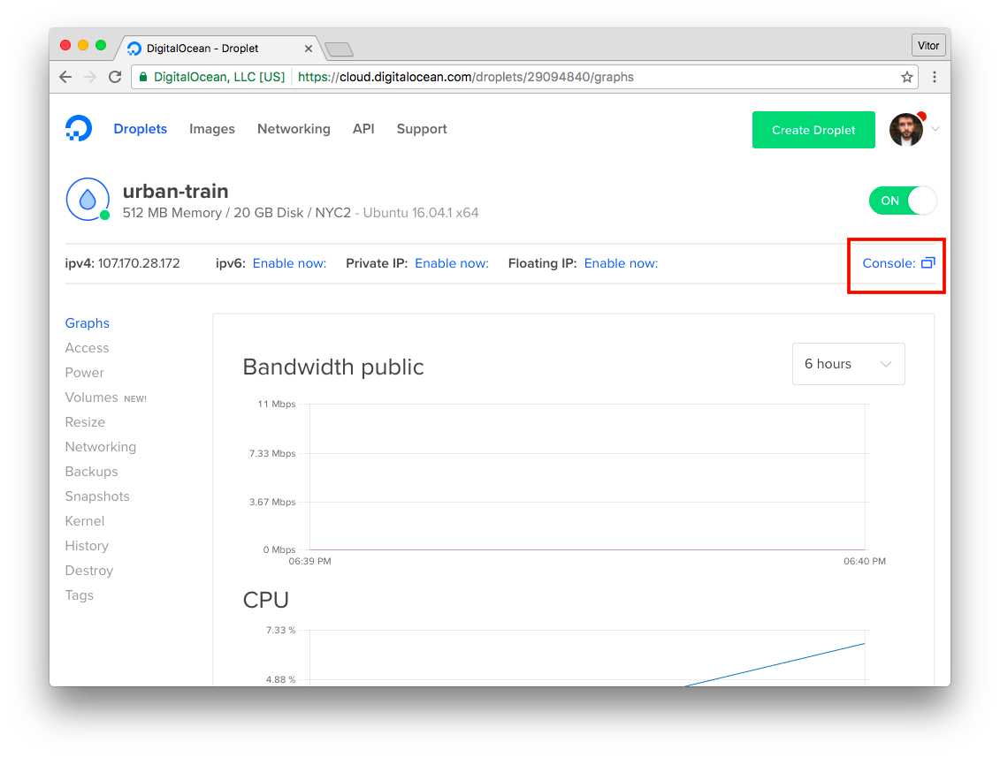
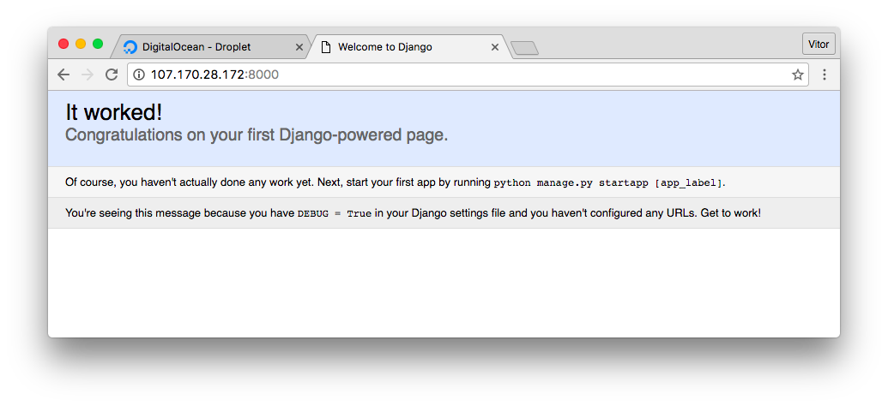
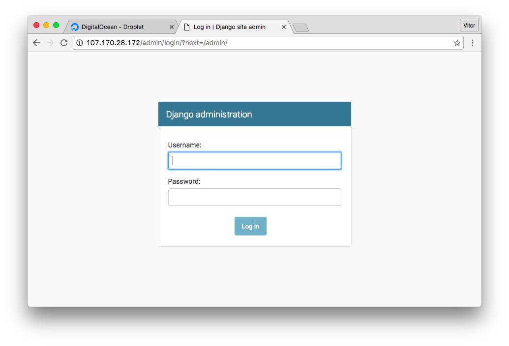

(Picture:
(Picture: DigitalOcean is a Virtual Private Server (VPS) provider. In my opinion it’s a great service to get started. It’s cheap and very simple to setup. In this tutorial I will guide you through the steps I go to deploy a Django application using Ubuntu 16.04, Git, PostgreSQL, NGINX, Supervisor and Gunicorn.
In this tutorial we will be deploying the following Django application: github.com/sibtc/urban-train
It’s just an empty Django project I created to illustrate the deployment process. If you are wondering about the name, it is the repository name suggestion GitHub gave.
If you don’t have a DigitalOcean account yet, you can sign up using the link below and get $10 credit to get started:
Get $10 free credit on DigitalOcean. (Disclaimer: this is referral link, meaning you and me get credit.)
Anyway! Let’s get started.
Create a New Droplet
Pick the Ubuntu 16.04.1 distribution:

Select the size of the Droplet (cloud server):

Select the region you want to deploy:

Finally pick a name for the Droplet:

And click on Create. After that you will see the recently created droplet in your profile:

You will receive the root password via email. Now pick the IP Address and ssh into the server:
ssh root@107.170.28.172
You will be asked to change the root password upon the first login.
If you are using a Unix-like operating system you can use the terminal. If you are on Windows, you can perhaps download PuTTY.
Also if you prefer, you can use the Digital Ocean’s console:

Installing the Server Dependencies
First thing let’s upgrade the packages:
sudo apt-get update
sudo apt-get -y upgradePostgreSQL
Install the dependencies to use PostgreSQL with Python/Django:
sudo apt-get -y install build-essential libpq-dev python-devInstall the PostgreSQL Server:
sudo apt-get -y install postgresql postgresql-contribNGINX
Install NGINX, which will be used to serve static assets (css, js, images) and also to run the Django application behind a proxy server:
sudo apt-get -y install nginxSupervisor
Supervisor will start the application server and manage it in case of server crash or restart:
sudo apt-get -y install supervisorEnable and start the Supervisor:
sudo systemctl enable supervisor
sudo systemctl start supervisorPython Virtualenv
The Django application will be deployed inside a Python Virtualenv, for a better requirements management:
sudo apt-get -y install python-virtualenvConfigure PostgreSQL Database
Switch users:
su - postgresCreate a database user and the application database:
createuser u_urban
createdb urban_prod --owner u_urban
psql -c "ALTER USER u_urban WITH PASSWORD '123'"PS: Make sure to pick a secure password! I’m using 123 for simplicity sake.
We can now go back to the root user, simply exit:
exitConfigure The Application User
Create a new user with the command below:
adduser urbanUsually I just use the application name. You will be asked a few questions. Sample of the output below:
Adding user `urban' ...
Adding new group `urban' (1000) ...
Adding new user `urban' (1000) with group `urban' ...
Creating home directory `/home/urban' ...
Copying files from `/etc/skel' ...
Enter new UNIX password:
Retype new UNIX password:
passwd: password updated successfully
Changing the user information for urban
Enter the new value, or press ENTER for the default
Full Name []:
Room Number []:
Work Phone []:
Home Phone []:
Other []:
Is the information correct? [Y/n]Add the user to the list of sudoers:
gpasswd -a urban sudoSwitch to the recently created user:
su - urbanConfigure the Python Virtualenv
At this point we are logged in with the urban user (or whatever named you selected). We will install our Django
application in this user’s home directory /home/urban:
virtualenv .Activate it:
source bin/activateClone the repository:
git clone https://github.com/sibtc/urban-train.gitThis is how the /home/urban directory should look like at the moment:
urban/
|-- bin/
|-- urban-train/ <-- Django App (Git Repository)
|-- include/
|-- lib/
|-- local/
|-- pip-selfcheck.json
+-- share/First open the urban-train directory:
cd urban-trainInstall the project’s dependencies:
pip install -r requirements.txtAt this point you will need to set the database credentials in the settings.py file:
settings.py
DATABASES = {
'default': {
'ENGINE': 'django.db.backends.postgresql_psycopg2',
'NAME': 'urban_prod',
'USER': 'u_urban',
'PASSWORD': '123',
'HOST': 'localhost',
'PORT': '',
}
}PS: There are better and secure ways to handle SECRET_KEY, database credentials etc. I’m editing it directly in the settings.py file for the sake of simplicity. The focus of this tutorial is on the deployment process itself.
Migrate the database:
python manage.py migrateCollect the static files:
python manage.py collectstaticTest if everything is okay:
python manage.py runserver 0.0.0.0:8000Access the IP Address of your server using port 8000. In my case, 107.170.28.172:8000.

This is just a test. We won’t be using the runserver to run our application. We will be using a proper application
server to securely serve our application.
Hit CONTROL-C to quit the development server and let’s keep moving forward.
Configure Gunicorn
First install Gunicorn inside the virtualenv:
pip install gunicornCreate a file named gunicorn_start inside the bin/ folder:
vim bin/gunicorn_startAnd add the following information and save it:
/home/urban/bin/gunicorn_start
#!/bin/bash
NAME="urban_train"
DIR=/home/urban/urban-train
USER=urban
GROUP=urban
WORKERS=3
BIND=unix:/home/urban/run/gunicorn.sock
DJANGO_SETTINGS_MODULE=urban_train.settings
DJANGO_WSGI_MODULE=urban_train.wsgi
LOG_LEVEL=error
cd $DIR
source ../bin/activate
export DJANGO_SETTINGS_MODULE=$DJANGO_SETTINGS_MODULE
export PYTHONPATH=$DIR:$PYTHONPATH
exec ../bin/gunicorn ${DJANGO_WSGI_MODULE}:application \
--name $NAME \
--workers $WORKERS \
--user=$USER \
--group=$GROUP \
--bind=$BIND \
--log-level=$LOG_LEVEL \
--log-file=-Make the gunicorn_start file is executable:
chmod u+x bin/gunicorn_startCreate a directory named run, for the unix socket file:
mkdir runConfigure Supervisor
Now what we want to do is configure Supervisor to take care of running the gunicorn server.
First let’s create a folder named logs inside the virtualenv:
mkdir logsCreate a file to be used to log the application errors:
touch logs/gunicorn-error.logCreate a new Supervisor configuration file:
sudo vim /etc/supervisor/conf.d/urban-train.conf/etc/supervisor/conf.d/urban-train.conf
[program:urban-train]
command=/home/urban/bin/gunicorn_start
user=urban
autostart=true
autorestart=true
redirect_stderr=true
stdout_logfile=/home/urban/logs/gunicorn-error.logReread Supervisor configuration files and make the new program available:
sudo supervisorctl reread
sudo supervisorctl updateCheck the status:
sudo supervisorctl status urban-train
urban-train RUNNING pid 23381, uptime 0:00:15Now you can control your application using Supervisor. If you want to update the source code of your application with a new version, you can pull the code from GitHub and then restart the process:
sudo supervisorctl restart urban-trainWhere urban-train will be the name of your application.
Configure NGINX
Add a new configuration file named urban inside /etc/nginx/sites-available/:
sudo vim /etc/nginx/sites-available/urban-train/etc/nginx/sites-available/urban-train
upstream app_server {
server unix:/home/urban/run/gunicorn.sock fail_timeout=0;
}
server {
listen 80;
# add here the ip address of your server
# or a domain pointing to that ip (like example.com or www.example.com)
server_name 107.170.28.172;
keepalive_timeout 5;
client_max_body_size 4G;
access_log /home/urban/logs/nginx-access.log;
error_log /home/urban/logs/nginx-error.log;
location /static/ {
alias /home/urban/static/;
}
# checks for static file, if not found proxy to app
location / {
try_files $uri @proxy_to_app;
}
location @proxy_to_app {
proxy_set_header X-Forwarded-For $proxy_add_x_forwarded_for;
proxy_set_header Host $http_host;
proxy_redirect off;
proxy_pass http://app_server;
}
}Create a symbolic link to the sites-enabled dir:
sudo ln -s /etc/nginx/sites-available/urban-train /etc/nginx/sites-enabled/urban-trainRemove NGINX default website:
sudo rm /etc/nginx/sites-enabled/defaultRestart NGINX:
sudo service nginx restartThe Final Test
Alright! At this point your application should be up and running! Open the web browser and access it:

A final test I like to run is rebooting the machine and see if everything restarts automatically:
sudo rebootWait a few seconds. Access the website via browser. If it loads normally, means everything is working as expected! All the process are starting automatically.
Updating the Application
Usually that’s the process you will follow when you want to update your Django application:
ssh urban@107.170.28.172
source bin/activate
cd urban-train
git pull origin master
python manage.py collectstatic
python manage.py migrate
sudo supervisorctl restart urban-train
exitCaveats
I just wanted to take you through the basic steps of a deployment using Digital Ocean. Actually, for the most part the basic steps will be the same for pretty much every cloud provider.
Please note that there are lots of details regarding security, performance, how you should manage the sensitive data of your application, SSL certificate installation and so on.
I highly recommend reading all the available documentation about deployment on the official Django Docs. Also it’s very important to learn about the tooling you are using. Gunicorn, NGINX, Ubuntu, Supervisor, etc.
Further reading:
- Django Docs: Deployment checklist
- Deploying Gunicorn
- NGINX Pitfalls and Common Mistakes
- Initial Server Setup, Root Login, etc
- How to Setup a SSL Certificate on Nginx for a Django Application
- Separating settings from code (database information, security key, allowed hosts, etc)
I hope you enjoyed this tutorial! If you have any question, please leave a comment below!
Referral Link
DigitalOcean $10 free credit to get started.
Even though I’m sharing a referral link, I truly recommend their service (this blog itself is hosted there) and I have several Django applications deployed on DigitalOcean. I find it very inexpensive and ridiculously easy to setup.
 A Complete Beginner's Guide to Django - Part 7
A Complete Beginner's Guide to Django - Part 7
 How to Deploy a Django Application on RHEL 7
How to Deploy a Django Application on RHEL 7
 How to Deploy Django Applications on Heroku
How to Deploy Django Applications on Heroku
 How to Extend Django User Model
How to Extend Django User Model
 How to Setup a SSL Certificate on Nginx for a Django Application
How to Setup a SSL Certificate on Nginx for a Django Application